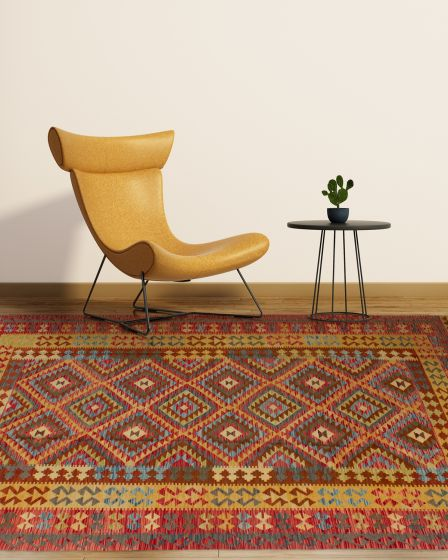

About us
From mountain wool traditions to a Portland rug showroom.
Our work with rugs began long before the showroom, in childhood memories of animals, wool, family, and artisanship near the Zagros Mountains.

Rooted in heritage, built for Portland homes.
Our journey with rugs begins far before this business. As a child, I was surrounded by rural life, caring for lambs and goats, guiding them through mountain landscapes and river valleys during the summer seasons. We washed and sheared wool by hand, beginning a process passed down through generations.
That wool went to my mother and aunts, who hand-spun, cleaned, and prepared it before local artisans transformed it into handcrafted rugs. Every piece carried more than pattern and color; it carried land, family, labor, patience, and tradition.
After moving to the United States, I spent years in construction, remodeling, and interior design. My connection to rugs stayed with me, and I began selling rugs from my garage before opening a Portland showroom after years of dedication.
As a Kurdish man from Van, near the Zagros Mountains, this work is deeply personal. Zagros Rugs is a small, family-owned business connected to authentic wool, thoughtful craftsmanship, and rugs that bring history and warmth into everyday spaces.